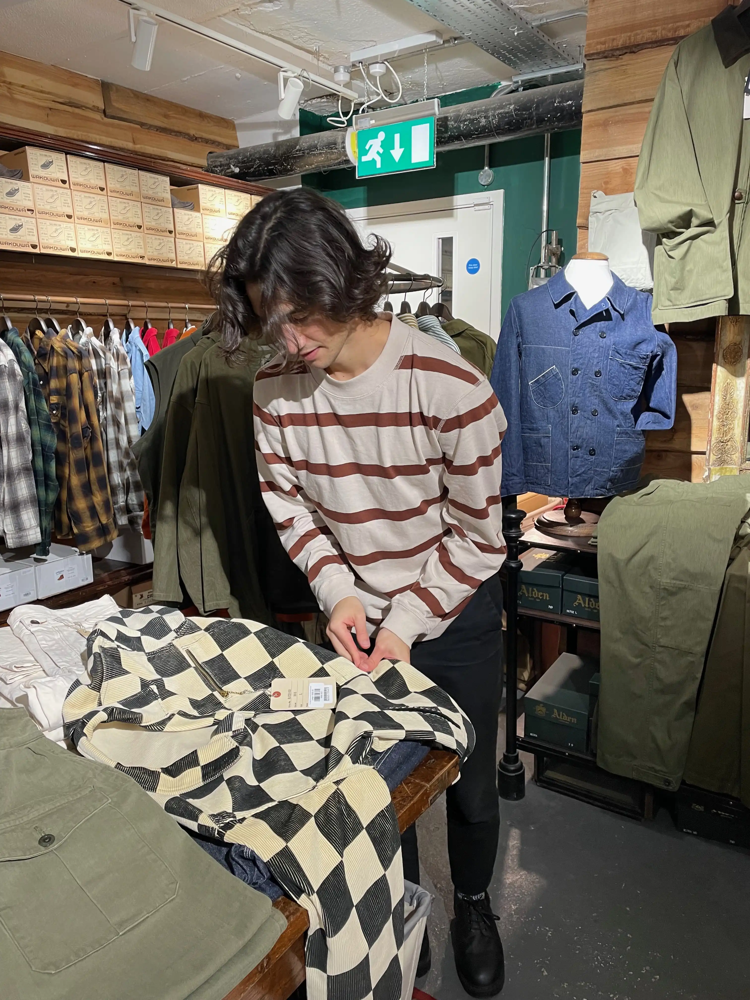

about
I am a statistician (applied scientist, data scientist, machine learning person, etc.). I am interested in Bayesian statistics, probabilistic programming, spatiotemoporal models, forecasting, and generative modelling.I have worked at Amazon implementing multivariate, probabilistic time series models to forecast product demand, at Faculty building LLM applications, as well as several freelance jobs. I completed my PhD at Imperial College London looking at small-area trends in mortality in England using scalable Bayesian models, supervised by Majid Ezzati, James Bennett and Seth Flaxman. Before that, I studied theoretical physics, also at Imperial College, so I like any excuse to dig into the maths to speed up and scale Bayesian models (e.g. conjugate Gibbs samplers).
I'm keen to meet with anyone to chat about forecasting/maths/cricket or anything you're working on that you think might interest me. If you're in London – or if you want to invite me to your part of the world – contact me using the links in the footer.
